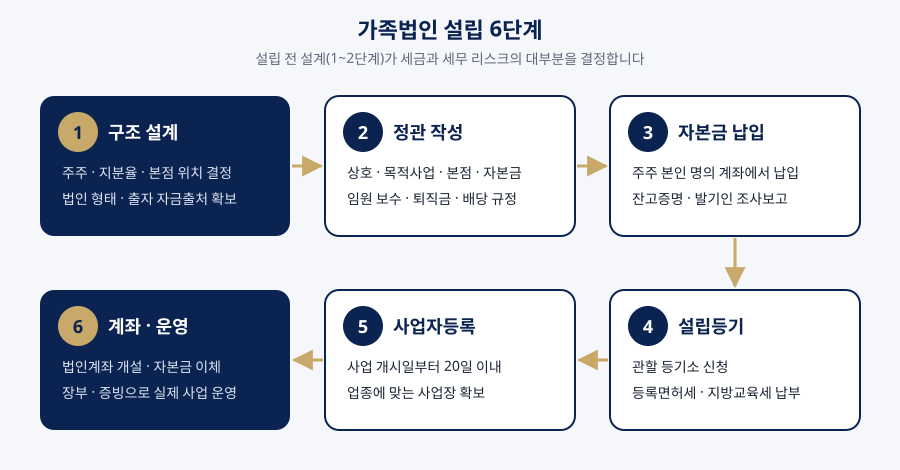

01 · 상속·증여세 뉴스레터 No.6
가족법인, 왜 만들고 어떻게 설계해야 할까?
설립 이유 · 지분과 임원 구조 · 설립 절차, 그리고 2026년 세법과 국세청이 주목하는 위험
결론부터
가족법인은 법에 따로 정해진 회사 형태가 아니라, 부모 · 배우자 · 자녀가 주주나 임원으로 참여하는 일반 주식회사입니다. 개인보다 낮은 법인세율 구조, 실제 근무하는 가족에 대한 급여 설계, 자녀 지분을 통한 장기 승계에 쓰일 수 있지만, 지분을 가족에게 나누는 것만으로 세금이 줄어들지는 않습니다. 특히 부동산 임대 중심의 소규모 가족법인은 2025년부터 법인세 최저세율 구간 혜택이 사라졌고(2026년 개시 사업연도부터 20%), 부모의 저리 대여 등은 자녀 주주에 대한 증여로 과세될 수 있어 설립 전 설계가 결과를 좌우합니다.
1가족법인을 만드는 네 가지 이유와 현실 점검
| 설립 이유 | 기대 효과 | 꼭 확인할 점 |
|---|---|---|
| 세율 구조 차이 | 개인 종합소득세는 최고 45%(지방소득세 포함 49.5%)지만, 법인세는 과세표준 2억원 이하 10%, 200억원 이하 20%(2026년 개시 사업연도 기준)입니다. 이익을 법인에 남겨 재투자하면 당장의 세 부담이 낮아질 수 있습니다. | 법인 이익을 급여 · 배당으로 가져가면 다시 소득세가 붙습니다. 법인세율만 비교해 유리하다고 단정할 수 없습니다. |
| 가족 보수 설계 | 법인 업무를 실제로 하는 가족에게 급여 · 상여 · 퇴직금을 지급해 소득을 분산할 수 있습니다. | 실제 근무하지 않거나 업무에 비해 과도한 보수는 비용으로 인정되지 않습니다. 임원 퇴직금은 정관 규정이 필요합니다. |
| 지분 승계 준비 | 설립 때부터 자녀가 주주로 참여하면, 이후 회사가 성장한 가치가 자녀 지분에 쌓입니다. | 자녀의 출자금 자금출처와 증여세 신고, 부모와 법인 사이 거래의 증여의제를 함께 검토해야 합니다. |
| 가족 중심 의사결정 | 소수 가족이 주주 · 임원이어서 의사결정 구조가 단순합니다. | 법인 자금은 가족 자금이 아닙니다. 업무와 무관한 인출은 가지급금으로 불이익을 받습니다. |
2지분과 임원 구조, 이렇게 설계합니다

가족 모두가 주주가 될 필요는 없습니다. 위 예시처럼 아버지와 자녀가 주주로 출자하고, 어머니는 주식 없이 이사나 감사로만 참여하는 구성도 가능합니다. 발기인이 아닌 임원이 있으면 설립 시 발기인 조사보고를 그 임원이 맡을 수 있어 절차가 간편해지고, 이사 · 감사가 모두 발기인이면 공증인의 조사보고가 필요할 수 있습니다.
- 임원 수 자본금 10억원 미만 주식회사는 이사를 1~2명만 둘 수 있고 감사를 두지 않을 수도 있습니다(상법 제383조 · 제409조).
- 본점 주소 자택을 본점으로 등기할 수는 있지만, 업종에 따라 자택 주소로 사업자등록이 되지 않을 수 있으므로 미리 확인해야 합니다.
- 지분율과 세법상 지위 가족 지분 합계가 30% 이상이면 특정법인 거래 증여의제, 50%를 넘으면 부동산 임대 중심 법인의 소규모법인 규정이 적용될 수 있습니다(5번 참고).
3미성년 자녀를 주주로 넣을 때
미성년 자녀도 주주가 될 수 있습니다. 다만 소득이 없는 자녀의 출자금을 부모가 마련해 주면 증여세 문제가 생기므로, 주주명부에 이름을 올리는 것보다 출자금이 자녀 본인 계좌에서 명확한 근거로 납입되었는지가 핵심입니다.
| 증여자 → 수증자 | 증여재산공제(10년 합산) |
|---|---|
| 부모(직계존속) → 미성년 자녀 | 2,000만원 |
| 부모(직계존속) → 성년 자녀 | 5,000만원 |
| 배우자 → 배우자 | 6억원 |
공제는 부모 각각이 아니라 직계존속 전체 합산으로 10년간 한 번 적용됩니다(상속세 및 증여세법 제53조). 출자 전 최근 10년간 받은 증여, 자녀 계좌의 자금 흐름, 취득 주식 수와 지분율을 함께 정리해 두어야 합니다.
4설립 절차 6단계

- ① 구조 설계 주주 · 임원 · 지분율과 각자의 출자 자금 출처를 먼저 정합니다. 이후 단계는 되돌리기 어렵습니다.
- ② 정관 작성 상호, 목적사업, 본점 소재지, 자본금, 임원 보수와 퇴직금 지급 규정을 담습니다.
- ③ 자본금 납입 주주가 각자 자기 자금으로 납입하고, 자본금 10억원 미만이면 은행 잔고증명으로 납입을 증명할 수 있습니다.
- ④ 설립등기 관할 등기소에 신청하고 등록면허세 · 지방교육세를 냅니다.
- ⑤ 사업자등록 사업 개시일부터 20일 이내에 신청합니다.
- ⑥ 계좌 개설 · 운영 법인계좌를 만들어 자본금을 옮기고, 이후 급여 · 배당 · 차입 등 모든 자금 이동을 장부와 증빙으로 관리합니다.
52025~2026년 세법 개정과 국세청 동향
① 부동산 임대 중심 소규모 가족법인: 최저세율 구간 배제
지배주주와 그 친족 지분이 50%를 넘고, 부동산임대업이 주된 사업이거나 임대료 · 이자 · 배당 수입이 매출의 50% 이상이며, 상시근로자가 5명 미만인 법인은 성실신고확인 대상입니다(법인세법 시행령 제42조제2항). 이런 법인은 2025년 개시 사업연도부터 과세표준 2억원 이하 구간의 낮은 세율을 적용받지 못하고 200억원까지 단일세율(2025년 19%, 2026년 개시 사업연도부터 20%)이 적용됩니다. 기업업무추진비와 업무용승용차 비용 한도도 일반 법인보다 낮습니다.
| 과세표준(2026년 개시 사업연도) | 일반 법인 | 부동산 임대 중심 소규모법인 |
|---|---|---|
| 2억원 이하 | 10% | 20% |
| 2억원 초과 ~ 200억원 이하 | 20% | 20% |
| 200억원 초과 ~ 3,000억원 이하 | 22% | 22% |
| 3,000억원 초과 | 25% | 25% |
법인세법 제55조(2025.12.23 개정으로 각 구간 1%p 인상, 2026.1.1 이후 개시 사업연도부터 적용). 지방소득세 10%가 별도로 붙습니다.
② 부모의 무상 · 저리 대여: 자녀 주주에게 증여세

자녀 등 지배주주와 그 친족의 지분이 30% 이상인 법인이 부모로부터 돈을 무이자 · 저리로 빌리거나 재산을 싸게 넘겨받으면, 법인이 얻은 이익에 각 주주의 지분율을 곱한 금액을 주주가 증여받은 것으로 봅니다(상속세 및 증여세법 제45조의5). 주주 1인당 이익이 1억원 이상일 때 과세되며, 금전 대여는 적정이자율 4.6%와의 차이로 이익을 계산합니다. “법인은 별개의 인격체”라는 주장만으로는 이 과세를 피하기 어렵습니다.
③ 국세청의 점검 방향
- 사업 실체 자녀가 실제로 경영하는지, 법인이 자기 수입으로 차입금 원리금을 갚을 수 있는지를 봅니다. 서류상 회사로 판단되면 부모가 자녀에게 직접 증여한 것으로 재구성될 수 있습니다.
- 자금 흐름 대조 법인 자금 흐름, 주주의 소득과 자금 원천, 이자 지급 내역을 전산으로 대조하는 방식으로 점검이 강화되고 있습니다.
- 업무무관 가지급금 주주 · 임원이 법인 돈을 업무와 관계없이 가져가면 인정이자가 법인 수익에 더해지고 관련 지급이자는 비용으로 인정되지 않으며, 회수하지 않으면 상여로 처분되어 소득세가 붙습니다.
④ 주택을 사려는 가족법인이라면
법인이 주택을 취득하면 원칙적으로 12% 취득세 중과가 적용되고, 종합부동산세는 기본공제 없이 2.7%(2주택 이하) 또는 5%(3주택 이상) 단일세율로 과세됩니다. 주거용 부동산 투자 목적의 가족법인은 세 부담이 오히려 커질 수 있습니다.
6설립 전 체크리스트
- 설립 목적과 업종 실제로 할 사업이 무엇인지, 부동산 임대 중심 소규모법인에 해당하는지부터 확인합니다.
- 출자금 자금출처 자녀 출자금은 본인 소득이나 신고된 증여 자금으로 납입하고 증빙을 보관합니다.
- 가족 보수의 근거 근무 실적과 업무에 맞는 보수를 정하고, 임원 보수 · 퇴직금 규정은 정관이나 주주총회 결의로 마련합니다.
- 부모와 법인의 거래 자금 대여는 적정 이자와 상환 계획을 담은 계약서로, 재산 거래는 시가로 진행합니다.
- 배당 방식 지분 비율과 다른 차등배당은 초과배당 이익에 대한 증여세 문제가 생길 수 있어 사전 검토가 필요합니다.
- 자금 분리 법인계좌와 가족 개인 계좌를 철저히 구분하고, 모든 지급에 회계 처리 근거를 남깁니다.
전문가와 상담하세요
가족법인은 가족 구성, 보유 자산, 사업 내용에 따라 유불리가 크게 달라집니다. 설립 전에 지분 구조, 자금출처, 보수 · 배당 계획을 함께 설계하면 이후의 세무 위험을 크게 줄일 수 있습니다.
가족법인 설계 상담 신청근거 및 참고자료
- 국가법령정보센터 · 법인세법 제55조(세율)
- 국가법령정보센터 · 법인세법 시행령 제42조(소규모법인 요건)
- 국가법령정보센터 · 상속세 및 증여세법 제45조의5(특정법인 증여의제)
- 국가법령정보센터 · 상속세 및 증여세법 시행령 제34조의5
- 국가법령정보센터 · 상속세 및 증여세법 제53조(증여재산공제)
- 국가법령정보센터 · 상법 제383조(이사의 원수)
- 한국경제 · 부동산임대업이 주된 사업이면 법인세율 19% 일괄 적용(2026.3.11.)
- 택스워치 · 가족법인 세무 리스크와 국세청 점검 동향
- 법인등기 칼럼 · 가족법인 설립, 왜 만들고 어떻게 구성할까요?
이 글은 2026년 11월 19일 현재 법령과 공개 자료를 바탕으로 한 일반 정보입니다. 가족 구성, 지분율, 사업 내용, 자금 거래 방식에 따라 과세 결과가 달라지므로 개별 사안은 전문가 검토가 필요합니다.